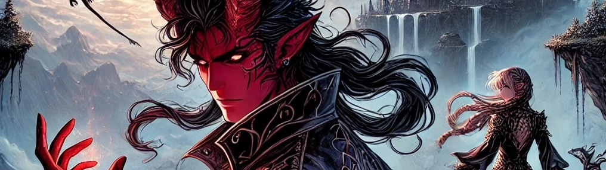
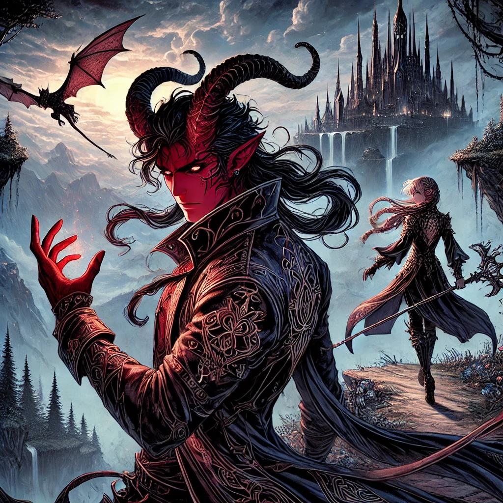
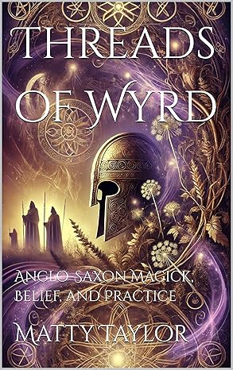

Matty Taylor — Author
Myth-inspired fantasy that hums with wyrd magic
Across novels, serial fiction, and immersive audio, I explore the spaces where ancient ritual meets modern resonance—drawing on Anglo-Saxon lore, runic mysticism, and the lived experience of community storytelling.
If you’re into dark folklore, luminous character arcs, and worlds threaded with fate, I’d love to welcome you into these tales.

The Tales of Veldrith
Step into a realm where ley lines pulse beneath the earth, empires rise and fall, and heroes wrestle with curses older than memory. Follow Vestinus, Eira Thorsdottir, and an ensemble of haunted champions through political intrigue, forgotten magic, and destiny-forged alliances.
New episodes drop weekly—crafted for listeners who crave sonic world-building and relentless momentum.

Threads of Wyrd
Threads of Wyrd: Anglo-Saxon Magick, Belief, and Practice uncovers the spiritual lifeblood of early medieval England, where pagan roots entwined with emerging Christian ritual. Herbal charms, rune-scribed protections, and whispered oaths blur the boundary between the mortal and divine.
Dive into manuscripts, archaeology, and oral tradition to experience magick as the Anglo-Saxons breathed it—earthy, evolving, and radically human.

The Tears of Tyrra
The Tears of Tyrra saga interlaces memoir, battlefield legend, and mystic transformation across interconnected novellas.
- Memoirs of the Crimson Dwarf — Feldspar Chilox’s quest for belonging through tragedy, humor, and mythic trials.
- Memoirs of the Azure Elf — Power reshaped by war, time-bending magic, and the price of vengeance.
- In the Snake’s Shadow — Tribal politics, ancestral rites, and the fierce duty of Cam’ron mac Domnaill.
Together they weave a world of bravery, betrayal, and the relentless pursuit of hope.